Code
library(tidyverse)
library(tidycensus)
library(sf)
library(caret)
Sys.getenv("CENSUS_API_KEY") != "" # should print TRUE[1] TRUEMUSA 5080
library(tidyverse)
library(tidycensus)
library(sf)
library(caret)
Sys.getenv("CENSUS_API_KEY") != "" # should print TRUE[1] TRUEThis function runs 10-fold cross-validation with the same seed every time, so every model in the log is tested on the same folds.
ctrl <- trainControl(method = "cv", number = 10)
cv_rmse <- function(formula, data) {
df <- if (inherits(data, "sf")) st_drop_geometry(data) else data
vars <- all.vars(formula)
bad <- vars[sapply(vars, function(v) any(is.na(df[[v]])))]
if (length(bad) > 0) {
stop("These variables have NAs: ", paste(bad, collapse = ", "),
". Fill them or choose another variable (Rule 1: don't drop rows).")
}
set.seed(5080)
fit <- train(formula, data = df, method = "lm", trControl = ctrl)
fit$results$RMSE
}model_log <- tibble(
model = character(),
added = character(),
cv_rmse = numeric(),
notes = character()
)# Dependent: % workers commuting by public transit B08301_010 / B08301_001
# mean travel time: B08013_001 ÷ B08303_001
# B08201_002: % Zero-Vehicle Households
# B25024_002: % 1-Unit, Detached Structures
# B25003_003: % renter-occupied housing
# B19013_001: Median income
philly_tracts <- get_acs(
geography = "tract",
state = "PA",
county = "Philadelphia",
variables = c(
total_pop = "B01003_001",
public_transit = "B08301_010",
total_workers = "B08301_001",
no_vehicle = "B08201_002",
aggr_travel = "B08013_001",
travel_time = "B08303_001",
detached_units = "B25024_002",
renter_housing = "B25003_003",
med_income = "B19013_001"
),
year = 2023,
output = "wide",
geometry = TRUE
) %>%
st_transform(2272)philly_tracts <- philly_tracts %>%
mutate(
pct_public_transit = public_transitE / total_workersE * 100,
PPT_moe = moe_prop(public_transitE, total_workersE, public_transitM, total_workersM),
PPT_cv = (PPT_moe / 1.645) / pct_public_transit * 100,
mean_travel = aggr_travelE / travel_timeE
)# How many tracts have no value for your outcome?
sum(is.na(philly_tracts$pct_public_transit))[1] 19# How reliable is it?
summary(philly_tracts$PPT_cv) Min. 1st Qu. Median Mean 3rd Qu. Max. NA's
0.09451 0.23011 0.31333 Inf 0.39339 Inf 19 philly_tracts %>%
mutate(reliability = case_when(
PPT_cv < 12 ~ "High",
PPT_cv <= 40 ~ "Moderate",
TRUE ~ "Low"
)) %>%
st_drop_geometry() %>%
count(reliability) reliability n
1 High 387
2 Low 21# What does the distribution look like?
ggplot(philly_tracts, aes(x = pct_public_transit)) +
geom_histogram(bins = 30) +
theme_minimal()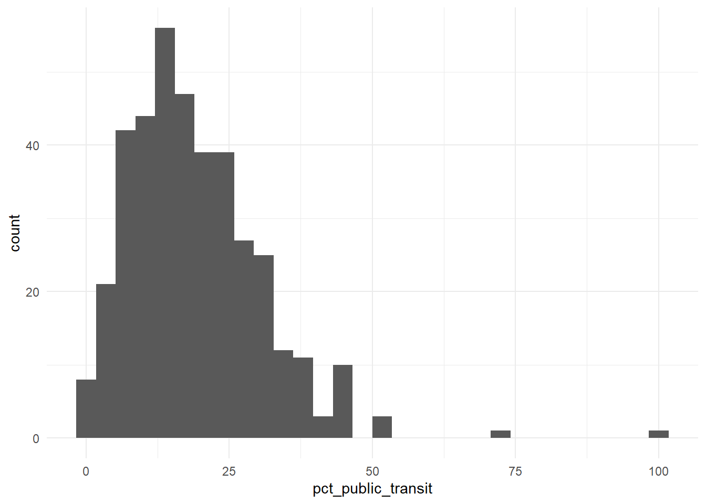
The response variable has high reliability, with a normal distribution slightly skewed to the right. Percent of workers taking public transport is a reflection of how well transit is in Philadelphia and could point towards planning that is skewed towards automobile transit.
Filter once, here, and never again. Every later step uses tracts.
tracts <- philly_tracts %>%
filter(!is.na(total_popE),
!is.na(mean_travel),
!is.na(no_vehicleE),
!is.na(detached_unitsE),
!is.na(renter_housingE),
!is.na(med_incomeE),
)
nrow(philly_tracts)[1] 408nrow(tracts)[1] 380# Get rows that were lost
setdiff(philly_tracts, tracts)Simple feature collection with 28 features and 24 fields
Geometry type: MULTIPOLYGON
Dimension: XY
Bounding box: xmin: 2660586 ymin: 204667.4 xmax: 2742221 ymax: 293042.3
Projected CRS: NAD83 / Pennsylvania South (ftUS)
First 10 features:
GEOID NAME
1 42101016500 Census Tract 165; Philadelphia County; Pennsylvania
2 42101980902 Census Tract 9809.02; Philadelphia County; Pennsylvania
3 42101980800 Census Tract 9808; Philadelphia County; Pennsylvania
4 42101028500 Census Tract 285; Philadelphia County; Pennsylvania
5 42101036901 Census Tract 369.01; Philadelphia County; Pennsylvania
6 42101014800 Census Tract 148; Philadelphia County; Pennsylvania
7 42101027700 Census Tract 277; Philadelphia County; Pennsylvania
8 42101030100 Census Tract 301; Philadelphia County; Pennsylvania
9 42101980500 Census Tract 9805; Philadelphia County; Pennsylvania
10 42101980100 Census Tract 9801; Philadelphia County; Pennsylvania
total_popE total_popM public_transitE public_transitM total_workersE
1 2165 634 318 177 854
2 0 11 0 11 0
3 0 11 0 11 0
4 2625 621 325 191 841
5 49 6 0 11 0
6 892 285 144 113 426
7 5489 1384 508 218 2119
8 6446 1066 717 422 2697
9 0 11 0 11 0
10 299 430 0 11 130
total_workersM no_vehicleE no_vehicleM aggr_travelE aggr_travelM
1 384 541 151 25655 15736
2 11 0 11 NA NA
3 11 0 11 NA NA
4 269 364 111 41755 19061
5 11 0 11 NA NA
6 170 275 119 10425 5440
7 913 821 244 77275 28603
8 572 1280 436 84020 24016
9 11 0 11 NA NA
10 177 4 6 NA NA
travel_timeE travel_timeM detached_unitsE detached_unitsM renter_housingE
1 774 383 162 113 620
2 0 11 0 11 0
3 0 11 0 11 0
4 778 222 42 36 427
5 0 11 0 11 0
6 405 175 3 9 427
7 2004 930 77 94 901
8 2437 505 235 197 1203
9 0 11 0 11 0
10 121 177 54 82 3
renter_housingM med_incomeE med_incomeM pct_public_transit PPT_moe
1 161 NA NA 37.23653 0.12215842
2 11 NA NA NaN NaN
3 11 NA NA NaN NaN
4 101 NA NA 38.64447 0.19052686
5 11 NA NA NaN NaN
6 138 NA NA 33.80282 0.22839782
7 334 NA NA 23.97357 0.14578600
8 363 NA NA 26.58509 0.14595818
9 11 NA NA NaN NaN
10 5 108889 472 0.00000 0.08461538
PPT_cv mean_travel geometry
1 0.1994290 33.14599 MULTIPOLYGON (((2696210 251...
2 NaN NA MULTIPOLYGON (((2681723 229...
3 NaN NA MULTIPOLYGON (((2660586 243...
4 0.2997112 53.66967 MULTIPOLYGON (((2700704 263...
5 NaN NA MULTIPOLYGON (((2681230 231...
6 0.4107458 25.74074 MULTIPOLYGON (((2690716 246...
7 0.3696725 38.56038 MULTIPOLYGON (((2694084 272...
8 0.3337524 34.47682 MULTIPOLYGON (((2711748 261...
9 NaN NA MULTIPOLYGON (((2697407 260...
10 Inf NA MULTIPOLYGON (((2672713 283...28 tracts were lost, with many missing median income information. There were many high numbered tracts with some having a decimal, which is the result of the tracts being modified.
# one scatterplot per predictor, e.g.:
library(psych)
predictors <- tracts %>%
st_drop_geometry() %>%
select(
pct_public_transit,
no_vehicleE,
detached_unitsE,
renter_housingE,
med_incomeE,
mean_travel
) %>%
drop_na()
pairs.panels(predictors, smooth=TRUE)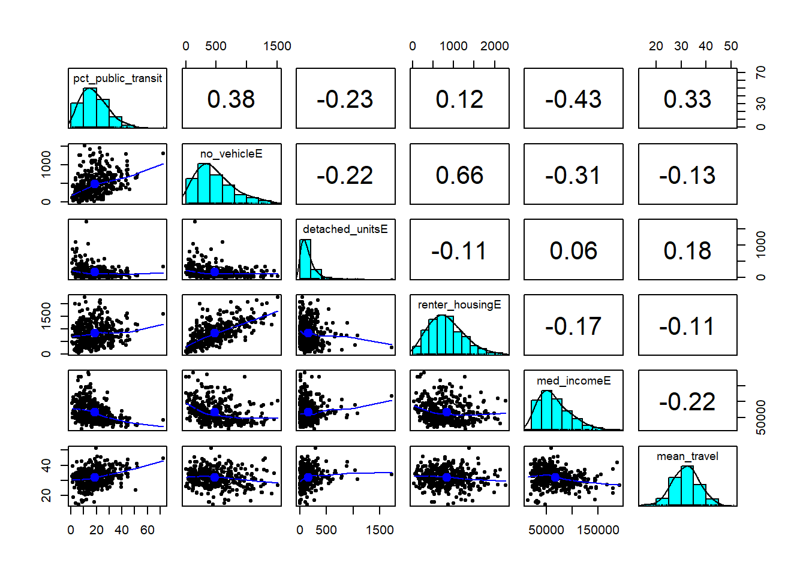
f1 <- pct_public_transit ~ no_vehicleE + detached_unitsE + renter_housingE + med_incomeE + mean_travel
m1 <- lm(f1, data = tracts)
summary(m1)
Call:
lm(formula = f1, data = tracts)
Residuals:
Min 1Q Median 3Q Max
-18.100 -6.039 -1.007 5.386 37.208
Coefficients:
Estimate Std. Error t value Pr(>|t|)
(Intercept) 1.503e+00 3.362e+00 0.447 0.655094
no_vehicleE 1.458e-02 1.976e-03 7.380 1.04e-12 ***
detached_unitsE -1.271e-02 2.538e-03 -5.007 8.52e-07 ***
renter_housingE -4.528e-03 1.351e-03 -3.353 0.000881 ***
med_incomeE -8.109e-05 1.437e-05 -5.644 3.29e-08 ***
mean_travel 6.718e-01 8.237e-02 8.156 5.31e-15 ***
---
Signif. codes: 0 '***' 0.001 '**' 0.01 '*' 0.05 '.' 0.1 ' ' 1
Residual standard error: 8.453 on 374 degrees of freedom
Multiple R-squared: 0.4033, Adjusted R-squared: 0.3953
F-statistic: 50.55 on 5 and 374 DF, p-value: < 2.2e-16model_log <- model_log %>%
add_row(model = "m1", added = "ACS baseline",
cv_rmse = cv_rmse(f1, tracts),
notes = "On tracts it hasn't seen, the baseline model misses by about 8.5%")
model_log# A tibble: 1 × 4
model added cv_rmse notes
<chr> <chr> <dbl> <chr>
1 m1 ACS baseline 8.47 On tracts it hasn't seen, the baseline model misse…tracts <- tracts %>% mutate(resid_m1 = residuals(m1))
ggplot(tracts) +
geom_sf(aes(fill = resid_m1), color = NA) +
scale_fill_gradient2(low = "#2166ac", mid = "grey95", high = "#b2182b", midpoint = 0) +
theme_void() +
labs(title = "Baseline model: where it's wrong",
subtitle = "Red = actual higher than predicted",
fill = "Residual")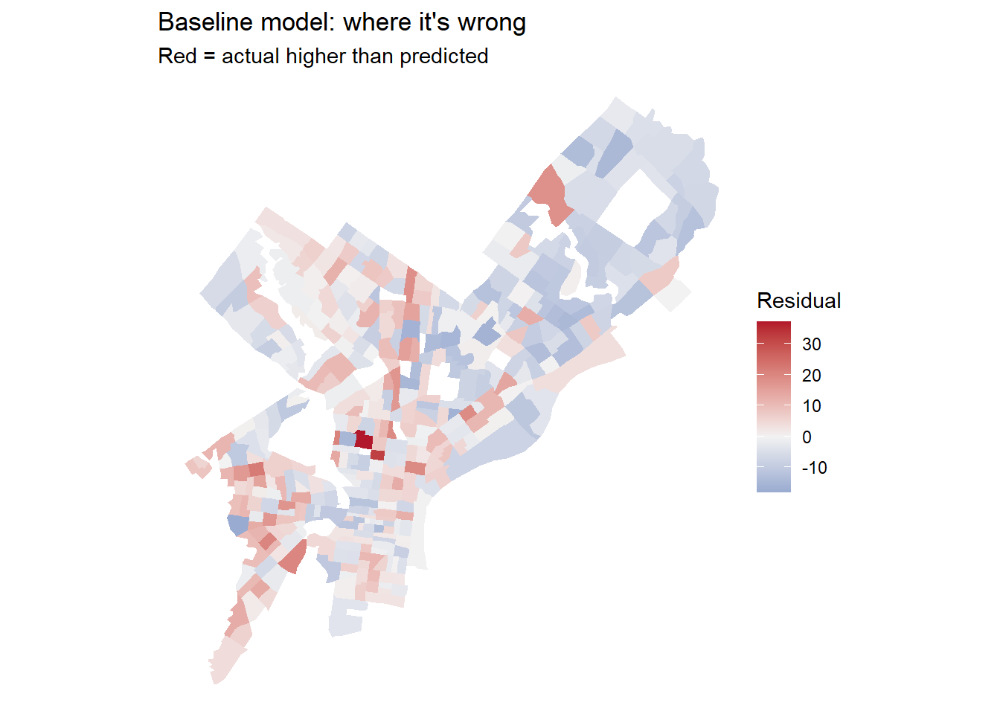
The model is under predicting around West Philadelphia and Brewerytown. Perhaps the large student population in both areas are inflating the number of people using public transport. The model over predicts near the Northeast Philadelphia Airport, due to the increased availability of public transport towards the airport.
carto_get <- function(sql) {
url <- paste0("https://phl.carto.com/api/v2/sql?format=GeoJSON&q=", URLencode(sql))
st_read(url, quiet = TRUE)
}trolley_stop <- st_read("https://hub.arcgis.com/api/v3/datasets/627fb25b9af14d2ab45fd3c8d65564b1_0/downloads/data?format=geojson&spatialRefId=4326&where=1%3D1") %>%
st_transform(st_crs(tracts))
afrd_housing <- st_read("https://hub.arcgis.com/api/v3/datasets/ca8944190b604b2aae7eff17c8dd9ef5_0/downloads/data?format=geojson&spatialRefId=4326&where=1%3D1") %>%
st_transform(st_crs(tracts))
reg_rail <- st_read("https://hub.arcgis.com/api/v3/datasets/281807e0099f461c8ae3db9ef4347970_0/downloads/data?format=geojson&spatialRefId=4326&where=1%3D1") %>%
st_transform(st_crs(tracts))
colleges <- st_read("https://hub.arcgis.com/api/v3/datasets/8ad76bc179cf44bd9b1c23d6f66f57d1_0/downloads/data?format=geojson&spatialRefId=4326&where=1%3D1") %>%
st_transform(st_crs(tracts))The trolley stop summaries provides ridership information, which will give insight into the amount of traffic at different stops. This can be helpful in approximating college student ridership by looking at stops in close proximity to universities. Unfortunately, bus data were only available in .csv form and in years after 2023. With the assumption that college students live in cheaper housing around universities, this data set will provide insight into the proximity of affordable housing to universities.
# Issue: Is public transportation inflated near colleges due to students?
# Assess: Use number of riders and affordable units near colleges to approximate number of college students
# Only interested in rentals
rental_afrd <- afrd_housing %>%
filter(project_type == "Rental")
# Calculate count of colleges and affordable housing units per tract
tracts <- tracts %>%
mutate(n_college = lengths(st_intersects(., colleges)))
tracts <- tracts %>%
mutate(n_afrd_units = lengths(st_intersects(., afrd_housing)))
# Calculate affordable housing and college density
tracts <- tracts %>%
mutate(area_sqmi = as.numeric(st_area(.)) / 27878400,
afrd_units_per_1k = sum(n_afrd_units) / total_popE * 1000,
colleges_per_sqmi = n_college / area_sqmi
)# Calculate nearest trolley stop in each tract
tract_pts <- st_point_on_surface(tracts)
nearest_trolley_idx <- st_nearest_feature(tract_pts, trolley_stop)
tracts <- tracts %>%
mutate(
dist_trolley_mi = as.numeric(
st_distance(tract_pts, trolley_stop[nearest_trolley_idx, ], by_element = TRUE)
) / 5280
)# Calculate nearest regional rail in each tract
tract_pts <- st_point_on_surface(tracts)
nearest_rail_idx <- st_nearest_feature(tract_pts, reg_rail)
tracts <- tracts %>%
mutate(
dist_rail_mi = as.numeric(
st_distance(tract_pts, reg_rail[nearest_rail_idx, ], by_element = TRUE)
) / 5280
)NE_airport <- st_sfc(st_point(c(-75.0106, 40.0819)), crs = 4326) %>%
st_transform(st_crs(tracts))
tracts <- tracts %>%
mutate(dist_airport_mi = as.numeric(st_distance(tract_pts, NE_airport)) / 5280)f2 <- pct_public_transit ~ no_vehicleE + detached_unitsE + renter_housingE + med_incomeE + mean_travel + afrd_units_per_1k
model_log <- model_log %>%
add_row(model = "m2", added = "Affordable rental units per 1000 residents",
cv_rmse = cv_rmse(f2, tracts),
notes = "Lowered CV RMSE")
# repeat for each feature
model_log# A tibble: 2 × 4
model added cv_rmse notes
<chr> <chr> <dbl> <chr>
1 m1 ACS baseline 8.47 On tracts it hasn't …
2 m2 Affordable rental units per 1000 residents 8.37 Lowered CV RMSE f3 <- pct_public_transit ~ no_vehicleE + detached_unitsE + renter_housingE + med_incomeE + mean_travel + colleges_per_sqmi
model_log <- model_log %>%
add_row(model = "m3", added = "Number of colleges per square mile",
cv_rmse = cv_rmse(f3, tracts),
notes = "Decreased CV RMSE")
# repeat for each feature
model_log# A tibble: 3 × 4
model added cv_rmse notes
<chr> <chr> <dbl> <chr>
1 m1 ACS baseline 8.47 On tracts it hasn't …
2 m2 Affordable rental units per 1000 residents 8.37 Lowered CV RMSE
3 m3 Number of colleges per square mile 8.46 Decreased CV RMSE f4 <- pct_public_transit ~ no_vehicleE + detached_unitsE + renter_housingE + med_incomeE + mean_travel + dist_trolley_mi
model_log <- model_log %>%
add_row(model = "m4", added = "Distance to Nearest Trolley Stop",
cv_rmse = cv_rmse(f4, tracts),
notes = "Lowered CV RMSE")
# repeat for each feature
model_log# A tibble: 4 × 4
model added cv_rmse notes
<chr> <chr> <dbl> <chr>
1 m1 ACS baseline 8.47 On tracts it hasn't …
2 m2 Affordable rental units per 1000 residents 8.37 Lowered CV RMSE
3 m3 Number of colleges per square mile 8.46 Decreased CV RMSE
4 m4 Distance to Nearest Trolley Stop 7.67 Lowered CV RMSE f5 <- pct_public_transit ~ no_vehicleE + detached_unitsE + renter_housingE + med_incomeE + mean_travel + dist_rail_mi
model_log <- model_log %>%
add_row(model = "m5", added = "Distance to Nearest Regional Rail",
cv_rmse = cv_rmse(f5, tracts),
notes = "Lowered CV RMSE")
# repeat for each feature
model_log# A tibble: 5 × 4
model added cv_rmse notes
<chr> <chr> <dbl> <chr>
1 m1 ACS baseline 8.47 On tracts it hasn't …
2 m2 Affordable rental units per 1000 residents 8.37 Lowered CV RMSE
3 m3 Number of colleges per square mile 8.46 Decreased CV RMSE
4 m4 Distance to Nearest Trolley Stop 7.67 Lowered CV RMSE
5 m5 Distance to Nearest Regional Rail 8.45 Lowered CV RMSE f6 <- pct_public_transit ~ no_vehicleE + detached_unitsE + renter_housingE + med_incomeE + mean_travel + dist_airport_mi
model_log <- model_log %>%
add_row(model = "m6", added = "Distance to NE Philadelphia Airport",
cv_rmse = cv_rmse(f6, tracts),
notes = "Lowered CV RMSE")
# repeat for each feature
model_log# A tibble: 6 × 4
model added cv_rmse notes
<chr> <chr> <dbl> <chr>
1 m1 ACS baseline 8.47 On tracts it hasn't …
2 m2 Affordable rental units per 1000 residents 8.37 Lowered CV RMSE
3 m3 Number of colleges per square mile 8.46 Decreased CV RMSE
4 m4 Distance to Nearest Trolley Stop 7.67 Lowered CV RMSE
5 m5 Distance to Nearest Regional Rail 8.45 Lowered CV RMSE
6 m6 Distance to NE Philadelphia Airport 7.70 Lowered CV RMSE Adding the density of affordable rental housing units slightly improved the model, but had very little effect. The density of riders actually made the model worse, observed through the increase in CV RMSE. Distance to colleges and the NE airport improved the model the most, with the latter reducing the CV RMSE by the largest margin.
The rider density may not be a good predictor because of its mismatch with the dependent variable. Rider density measures all passengers at each stop while the outcome variable measures whether people use public transit at all. Another reason could be due to multicollinearity with previous predictors like zero-vehicle households and % renting households.
ggplot(tracts, aes(x = mean_travel)) + geom_histogram(bins = 30) + theme_minimal()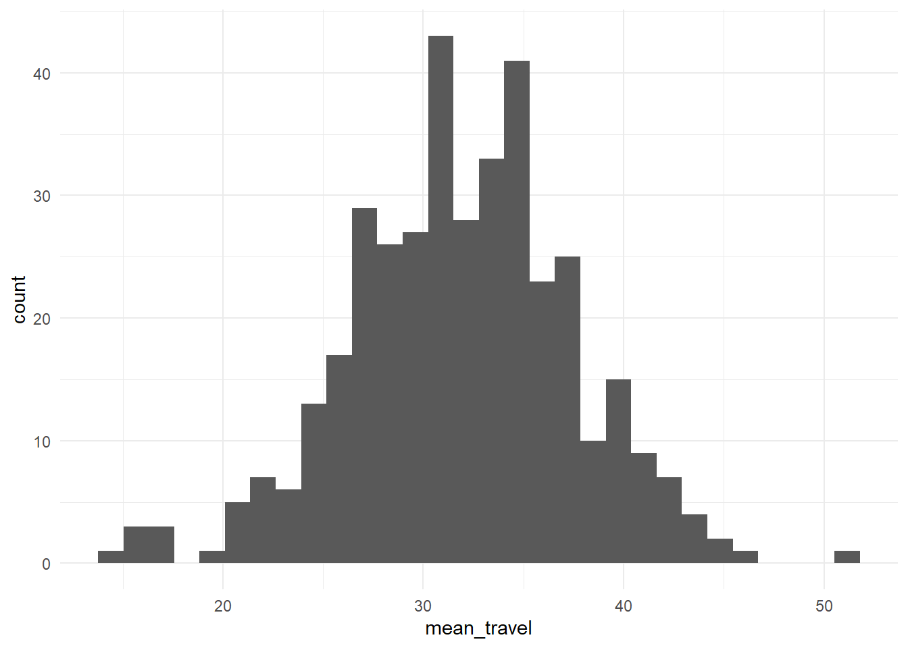
ggplot(tracts, aes(x = med_incomeE)) + geom_histogram(bins = 30) + theme_minimal()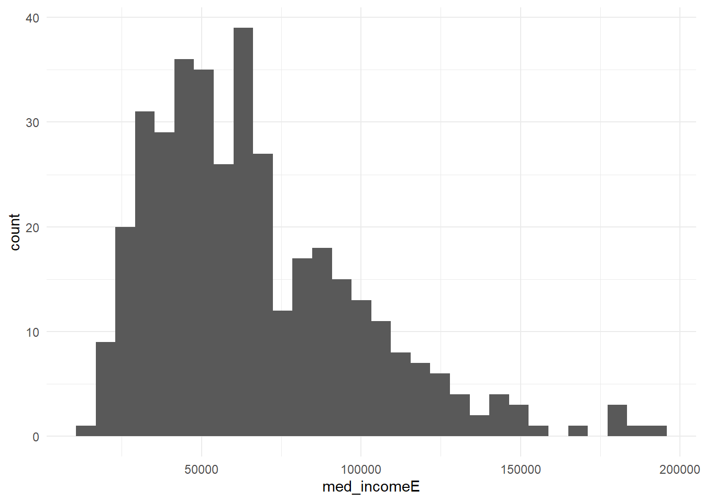
ggplot(tracts, aes(x = detached_unitsE)) + geom_histogram(bins = 30) + theme_minimal()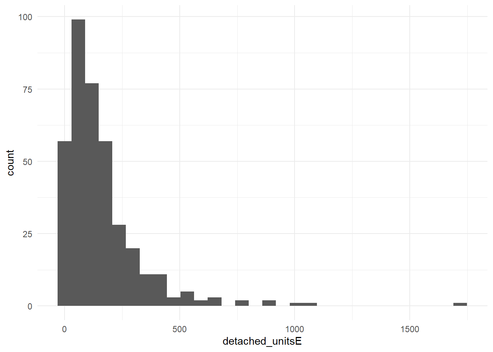
ggplot(tracts, aes(x = renter_housingE)) + geom_histogram(bins = 30) + theme_minimal()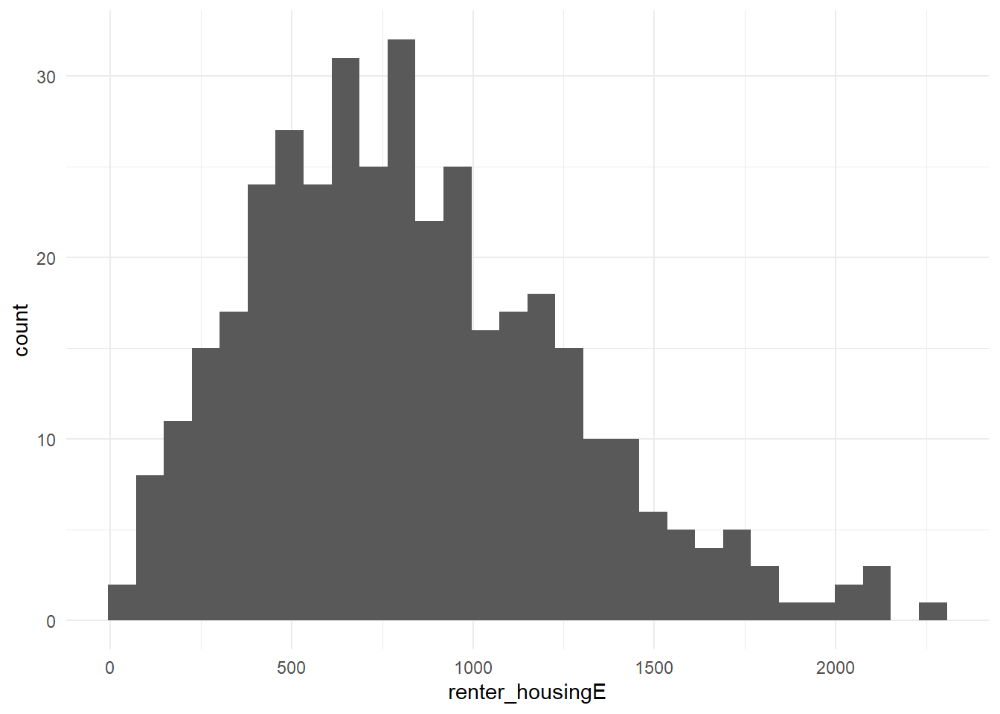
ggplot(tracts, aes(x = no_vehicleE)) + geom_histogram(bins = 30) + theme_minimal()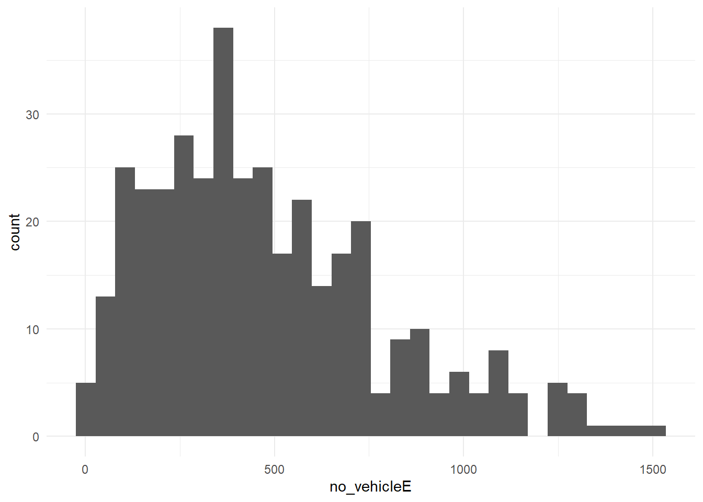
ggplot(tracts, aes(x = log1p(detached_unitsE))) + geom_histogram(bins = 30) + theme_minimal()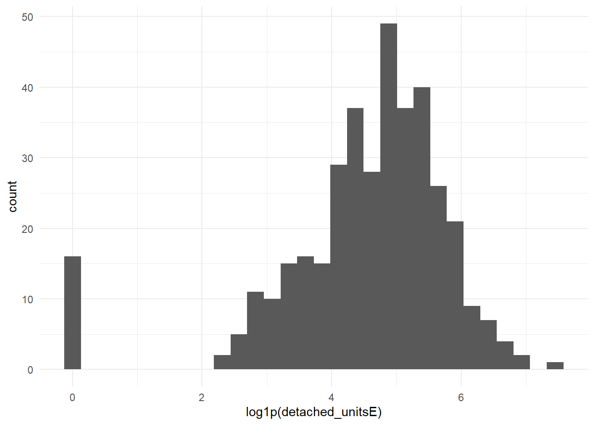
ggplot(tracts, aes(x = med_incomeE, y = pct_public_transit)) +
geom_point(alpha = 0.4) +
geom_smooth(method = "lm", formula = y ~ x + I(x^2), se = FALSE, color = "red") +
theme_minimal()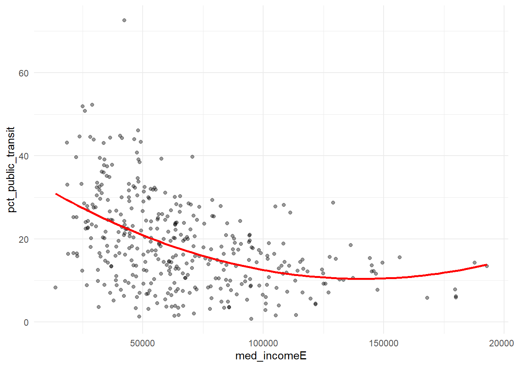
tracts <- tracts %>%
mutate(
travel_time = case_when(
mean_travel < 25 ~ "Short",
mean_travel < 35 ~ "Medium",
TRUE ~ "Long"
),
travel_time = factor(travel_time, levels = c("Short", "Medium", "Long"))
)
tracts %>% st_drop_geometry() %>% count(travel_time) travel_time n
1 Short 36
2 Medium 240
3 Long 104f_log <- pct_public_transit ~ no_vehicleE + log1p(detached_unitsE) + renter_housingE + med_incomeE + mean_travel
model_log <- model_log %>%
add_row(model = "m7", added = "log of detached housing units",
cv_rmse = cv_rmse(f_log, tracts),
notes = "Increased CV RMSE")f_squared <- pct_public_transit ~ no_vehicleE + detached_unitsE + renter_housingE + I(med_incomeE^2) + mean_travel
model_log <- model_log %>%
add_row(model = "m8", added = "Square of median income",
cv_rmse = cv_rmse(f_squared, tracts),
notes = "Increased CV RMSE")f_cat <- pct_public_transit ~ no_vehicleE + detached_unitsE + renter_housingE + med_incomeE + mean_travel + travel_time
model_log <- model_log %>%
add_row(model = "m9", added = "Travel time category",
cv_rmse = cv_rmse(f_cat, tracts),
notes = "Increased CV RMSE")
m_cat <- lm(f_cat, data = tracts)
summary(m_cat)
Call:
lm(formula = f_cat, data = tracts)
Residuals:
Min 1Q Median 3Q Max
-18.261 -6.149 -0.899 5.607 37.403
Coefficients:
Estimate Std. Error t value Pr(>|t|)
(Intercept) 3.043e+00 4.165e+00 0.731 0.465518
no_vehicleE 1.460e-02 1.992e-03 7.330 1.44e-12 ***
detached_unitsE -1.260e-02 2.550e-03 -4.940 1.18e-06 ***
renter_housingE -4.519e-03 1.356e-03 -3.333 0.000946 ***
med_incomeE -8.061e-05 1.442e-05 -5.590 4.41e-08 ***
mean_travel 5.908e-01 1.549e-01 3.814 0.000160 ***
travel_timeMedium 7.841e-01 2.056e+00 0.381 0.703209
travel_timeLong 1.765e+00 3.071e+00 0.575 0.565848
---
Signif. codes: 0 '***' 0.001 '**' 0.01 '*' 0.05 '.' 0.1 ' ' 1
Residual standard error: 8.471 on 372 degrees of freedom
Multiple R-squared: 0.4039, Adjusted R-squared: 0.3927
F-statistic: 36.01 on 7 and 372 DF, p-value: < 2.2e-16None of the transformations improved upon the baseline model. When compared to people with short commutes times, people with medium commute times are less likely to use public transit and people with long commute times are more to use public transit.
f_final <- pct_public_transit ~ no_vehicleE + detached_unitsE + renter_housingE + med_incomeE + mean_travel + afrd_units_per_1k + dist_trolley_mi + dist_airport_mi
m_final <- lm(f_final, data = tracts)
summary(m_final)
Call:
lm(formula = f_final, data = tracts)
Residuals:
Min 1Q Median 3Q Max
-20.853 -5.353 -0.562 4.518 36.325
Coefficients:
Estimate Std. Error t value Pr(>|t|)
(Intercept) -2.536e+00 4.936e+00 -0.514 0.6078
no_vehicleE 8.885e-03 1.969e-03 4.512 8.61e-06 ***
detached_unitsE -1.250e-03 2.687e-03 -0.465 0.6420
renter_housingE -3.226e-03 1.263e-03 -2.554 0.0110 *
med_incomeE -1.079e-04 1.335e-05 -8.083 8.99e-15 ***
mean_travel 7.431e-01 7.527e-02 9.873 < 2e-16 ***
afrd_units_per_1k 1.066e-02 6.498e-03 1.641 0.1017
dist_trolley_mi -6.835e-01 3.219e-01 -2.123 0.0344 *
dist_airport_mi 4.925e-01 2.618e-01 1.881 0.0607 .
---
Signif. codes: 0 '***' 0.001 '**' 0.01 '*' 0.05 '.' 0.1 ' ' 1
Residual standard error: 7.642 on 371 degrees of freedom
Multiple R-squared: 0.5162, Adjusted R-squared: 0.5058
F-statistic: 49.48 on 8 and 371 DF, p-value: < 2.2e-16model_log <- model_log %>%
add_row(model = "final", added = "afrd_units_per_1k + dist_trolley_mi + dist_airport_mi",
cv_rmse = cv_rmse(f_final, tracts),
notes = "best model")
model_log# A tibble: 10 × 4
model added cv_rmse notes
<chr> <chr> <dbl> <chr>
1 m1 ACS baseline 8.47 On tract…
2 m2 Affordable rental units per 1000 residents 8.37 Lowered …
3 m3 Number of colleges per square mile 8.46 Decrease…
4 m4 Distance to Nearest Trolley Stop 7.67 Lowered …
5 m5 Distance to Nearest Regional Rail 8.45 Lowered …
6 m6 Distance to NE Philadelphia Airport 7.70 Lowered …
7 m7 log of detached housing units 8.59 Increase…
8 m8 Square of median income 8.57 Increase…
9 m9 Travel time category 8.49 Increase…
10 final afrd_units_per_1k + dist_trolley_mi + dist_airport_mi 7.66 best mod…library(patchwork)
p1 <- ggplot(tracts) +
geom_sf(aes(fill = resid_m1), color = NA) +
scale_fill_gradient2(low = "#2166ac", mid = "grey95", high = "#b2182b", midpoint = 0) +
theme_void() +
labs(title = "Baseline model: where it's wrong",
subtitle = "Red = actual higher than predicted",
fill = "Residual")
tracts <- tracts %>% mutate(resid_final = residuals(m_final))
p2 <- ggplot(tracts) +
geom_sf(aes(fill = resid_final), color = NA) +
scale_fill_gradient2(low = "#2166ac", mid = "grey95", high = "#b2182b", midpoint = 0) +
theme_void() +
labs(title = "Final model: where it's wrong",
subtitle = "Red = actual higher than predicted",
fill = "Residual")
p1 + p2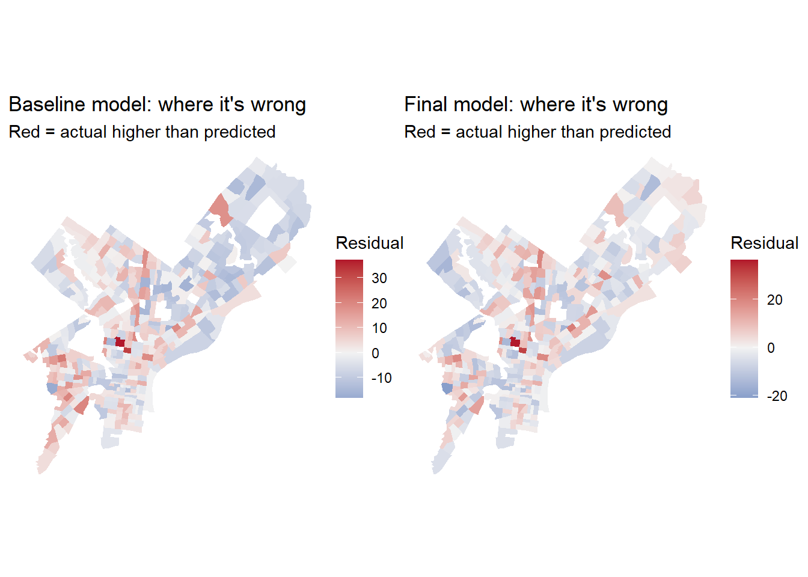
The residuals around the NE airport area generally reduced in magnitude. One tract near the NE airport that was over predicted actually had a higher residual than the initial model. Similarly, the over predicted tract in West Philly had a more extreme residual. Some under predicted areas in the Southeast got slightly better, but the bright red area around Brewery town is still the same. Overall, the clusters stayed the same but the model became more accurate at predicting percent public transit users in the Northeast and Southwest area, but got slightly worse in specific tracts.
ggplot(tracts, aes(x = PPT_cv, y = abs(resid_final))) +
geom_point(alpha = 0.5) +
geom_smooth(se = FALSE) +
labs(x = "CV of your outcome estimate (%)", y = "Size of the miss") +
theme_minimal()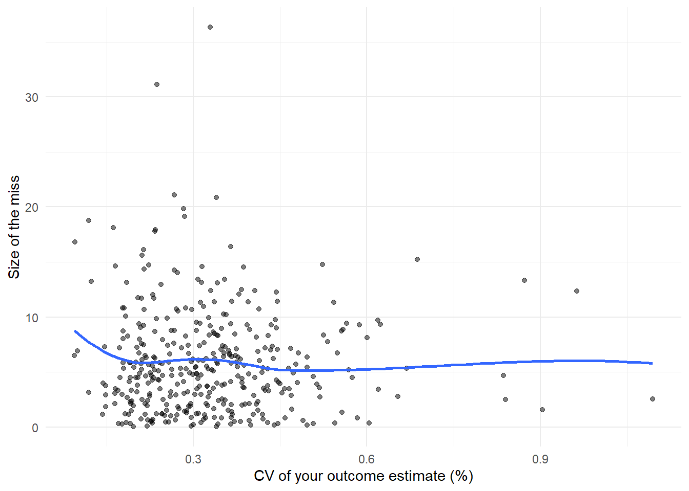
First, I would have liked to look at bus ridership since it has more overall coverage, but there were no data for 2023. The feature that lowered CV RMSE the most was distance to the Northeast Philadelphia Airport. This was reflected in the residuals around the airport decreasing in the second residual plot. The abundance of public transit in the forms of regional rail and L1 likely made this area a strong outlier in terms of public transit commuters. In comparison, other jobs around the city likely has less accessible public transit, making workers consider different options. The travel time category was the most disappointing because there was a weak positive relationship with the variable of interest observed in the correlation coefficient and scatter plot. Conceptually, this relationship makes sense, since longer travel times mean gas may not be efficient, so taking public transport would be the better option. However, adding the travel time categories actually made the prediction slightly worse. This could be due to the cutoff at each level not being representative and the variable is better as a continuous predictor. I was also disappointed by the proximity to a regional rail, as that should had have a big effect on workers travelling long distances.
For every mile closer to a college, the % of people taking public transport to work decreases by 1.27%. When comparing tracts A and B, if A was 1 mile away from a college, the model predicts tract A to have 1.27% less people taking public transport.
There are 3 census tracts that had extreme residuals that I would like to look at: one in West Philly, tracts in Brewery town, and one near NE airport. The tracts in West Philly and NE airport were over predicted, so I would want to look more closely at traffic congestion and road infrastructure since these variables are closely tied to whether or not a person decides to use a car. Using Google Street Map view could be a way to personally verify this, but the city of Philadelphia likely has data on these variables. For the tracts in Brewery town, getting the number of businesses and looking at the zoning ordinance to approximate how many go there for work would be the next step to prevent under predicting. The zoning ordinance and businesses geodata should be available on the opendataphilly website.
Since the CV of most data points are very low, it is unlikely due to statistical noise, but rather model error. For example, the samples that were a big miss also had relatively low CVs. The line does not indicate there is a trend in the estimate CV and the residual size. In conclusion, model training has to be more comprehensive to reduce the errors.